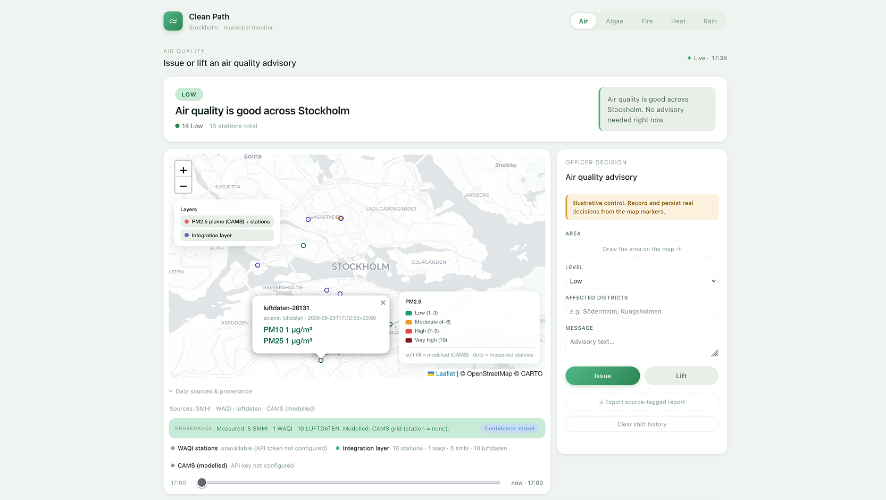

<!-- ===================================================================
     SECTION 03 · DEMO
     A fun, problem-first story · ends in the live app
     Owner: Pablo   ·   Edit only this file. See ../README.md
     =================================================================== -->
<style>
  /* Live product shot of the running prototype, sized to nearly fill the stage */
  .demo-shot { justify-content: center; padding: 1cqh 3cqw; }
  .demo-shot .shot-head { display: flex; align-items: baseline; justify-content: center; gap: 0.7em; flex-wrap: wrap; margin-bottom: 0.45em; }
  .demo-shot .shot-head h2 { font-size: 1.05em; font-weight: 700; letter-spacing: -0.02em; line-height: 1.05; }
  .demo-shot .shot-head .shot-sub { font-size: 0.6em; color: var(--muted); letter-spacing: 0.02em; }
  .shot-frame {
    margin: 0 auto;
    line-height: 0;
    border: 1px solid var(--line);
    border-radius: 0.55em;
    overflow: hidden;
    background: var(--bg-soft);
    box-shadow: 0 1.4cqh 4cqh rgba(0, 0, 0, 0.45);
  }
  .shot-frame img { display: block; width: auto; height: auto; max-width: 94cqw; max-height: 82cqh; }
  .shot-caption { font-size: 0.56em; color: var(--muted); line-height: 1.4; text-align: center; max-width: 46em; margin: 0.45em auto 0; }
  .shot-caption .kicker { color: var(--accent); font-weight: 600; }
  /* Oversized one-line story beats */
  .beat .content { max-width: 26em; }
  .beat .title { line-height: 1.05; }
  /* Interactive iframe embed */
  .app-embed { position: relative; width: 100%; height: 88cqh; border: 1px solid var(--line); border-radius: 0.55em; overflow: hidden; background: var(--bg-soft); }
  .app-embed iframe { display: block; width: 100%; height: 100%; border: none; }
  .app-embed .backup-img { display: none; width: 100%; height: 100%; object-fit: contain; }
  .app-embed.show-backup iframe { display: none; }
  .app-embed.show-backup .backup-img { display: block; }
  .app-embed .icon-btn { position: absolute; z-index: 10; width: 1.6em; height: 1.6em; padding: 0; background: transparent; color: var(--muted-dim); border: none; border-radius: 0.25em; font-size: 0.9em; cursor: pointer; display: flex; align-items: center; justify-content: center; transition: all 0.2s; opacity: 0.4; }
  .app-embed .icon-btn:hover { opacity: 0.8; color: var(--accent); }
  .app-embed .toggle-btn { bottom: 0.4em; left: 0.4em; }
  .app-embed .expand-btn { bottom: 0.4em; right: 0.4em; }
</style>

<!-- DIVIDER -->
<section class="slide divider">
  <div class="dnum">03</div>
  <div class="dtitle">Demo</div>
  <div class="drule"></div>
  <div class="notes-src">Pablo, 5 to 6 minutes. This section is a story, not a feature tour. Hook, then stakes, then the idea, then I switch to the live app, then the trust beat, then emoji finale. Lead with the problem the whole way.</div>
</section>

<!-- 1 · THE HOOK -->
<section class="slide beat">
  <div class="label">Demo</div>
  <div class="content">
    <h2 class="title">It is going to hit 38 degrees.</h2>
    <p class="lead" style="margin-top:0.5em;">And not for a day. For a whole week.</p>
  </div>
  <div class="notes-src">Open with the scene, not the app. Picture the hottest week of your life, and it just does not stop. Stockholm, seven days of extreme heat. Let it land for a second before the next slide.</div>
</section>

<!-- 2 · THE STAKES -->
<section class="slide beat">
  <div class="label">Demo · The problem</div>
  <div class="content">
    <h2 class="title">Someone has to choose who to help first.</h2>
    <ul class="points body" style="margin-top:0.6em;">
      <li>The people most at risk are the very old and the very young</li>
      <li>One person at the city decides who gets help, and when</li>
      <li>Wait too long, and people end up in hospital</li>
    </ul>
  </div>
  <div class="notes-src">This is the human problem. There is a real person whose job is to keep the city safe in a heatwave, and they cannot help everyone at once. So they have to choose. And if they choose too late, it hurts people. That is the problem we set out to solve, before we wrote a single line of code.</div>
</section>

<!-- 3 · THE IDEA (handoff to live app) -->
<section class="slide beat">
  <div class="label">Demo · The idea</div>
  <div class="content">
    <h2 class="title">What if a map could help them choose?</h2>
    <p class="lead" style="margin-top:0.5em;">Clean Path puts two things on one screen: where the heat will hit hardest, and where the people who need help most actually live.</p>
  </div>
  <div class="notes-src">Here is the turn. When you can see the danger and the vulnerable people on the same map, the choice gets a lot easier. This is my cue to switch to the live app. Show, do not tell.</div>
</section>

<!-- 4 · SHOW IT · LIVE PROTOTYPE (INTERACTIVE) -->
<section class="slide demo-shot">
  <div class="label" style="position:absolute; top:1.5em; left:3cqw; z-index:5;">Demo · Live</div>
  <div class="shot-head" style="margin-bottom:0.6em;">
    <h2 style="font-size:0.95em; margin-bottom:0.2em;">Heat + vulnerable sites on one map</h2>
    <span class="shot-sub" style="font-size:0.65em; display:block;">Clean Path, Stockholm · Click to interact</span>
  </div>
  <div class="app-embed" id="appEmbed">
    <iframe src="https://team-playground-ten.vercel.app/cleanpath/index.html#heat" title="Clean Path interactive prototype"></iframe>
    
    <button class="icon-btn toggle-btn" title="Show backup screenshot" onclick="document.getElementById('appEmbed').classList.toggle('show-backup')">🖼️</button>
    <button class="icon-btn expand-btn" title="Open in fullscreen" onclick="window.open('https://team-playground-ten.vercel.app/cleanpath/index.html', '_blank')">⛶</button>
  </div>
  <p class="shot-caption" style="font-size:0.56em; margin-top:0.5em;">Red zones: extreme heat. Blue marks: where elderly and children live. <span class="kicker">All at once.</span></p>
  <div class="notes-src">This is the interactive heat layer, embedded live. You can scroll, zoom, click the heat layer toggle. The expand button opens fullscreen in a new tab. Point at the red temperature zones and the blue markers for care homes and preschools. That co-location is the insight.</div>
</section>

<!-- 5 · TRUST IT -->
<section class="slide beat">
  <div class="label">Demo · Can we trust it?</div>
  <div class="content">
    <h2 class="title">Every dot says where it came from.</h2>
    <ul class="points body" style="margin-top:0.6em;">
      <li>Heat, rain and fire: live forecasts from SMHI, Sweden's weather service</li>
      <li>Air and water: real measurements from real stations</li>
      <li>If a number is a guess, the app says so. It never fakes a reading.</li>
    </ul>
  </div>
  <div class="notes-src">A forecast is a prediction, like your phone weather app. A measurement is what is happening right now. The app labels which is which, so the officer knows how sure to be before acting. That honesty is the whole point of trusting it with a real decision.</div>
</section>

<!-- 6 · YOUR TURN · EMOJI EDITION -->
<section class="slide">
  <div class="label">Demo · Your turn</div>
  <div class="content">
    <h2 class="title">Heat alert just hit your block. You've got a second to decide.</h2>
    <p class="lead" style="margin-bottom:0.8em; white-space:nowrap; font-size:0.8em;">Pick your emoji. No words. Just instinct.</p>
    <ul class="body" style="list-style:none; padding-left:0; line-height:1.7;">
      <li style="margin-bottom:0.25em;">😎 &nbsp;Our team can handle it</li>
      <li style="margin-bottom:0.25em;">😰 &nbsp;We need serious tech support</li>
      <li style="margin-bottom:0.25em;">🤖 &nbsp;AI watches, we stay in control</li>
      <li style="margin-bottom:0.25em;">🦾 &nbsp;Let AI think and act for us</li>
      <li>📱 &nbsp;Just alert everyone fast</li>
    </ul>
    <p class="lead" style="margin-top:0.8em; font-size:0.8em;">Shout it. Hold it up. One emoji only.</p>
  </div>
  <div class="notes-src">Pablo runs this. Five distinct choices: local confidence, need for help, AI as advisor, AI as autonomous agent, and pure communication. Read the spread: lots of 😰 means the gap Clean Path closes. Split between 🤖 and 🦾 shows the real tension about AI in decision-making. Perfect moment to say this is exactly what we prototyped.</div>
</section>
